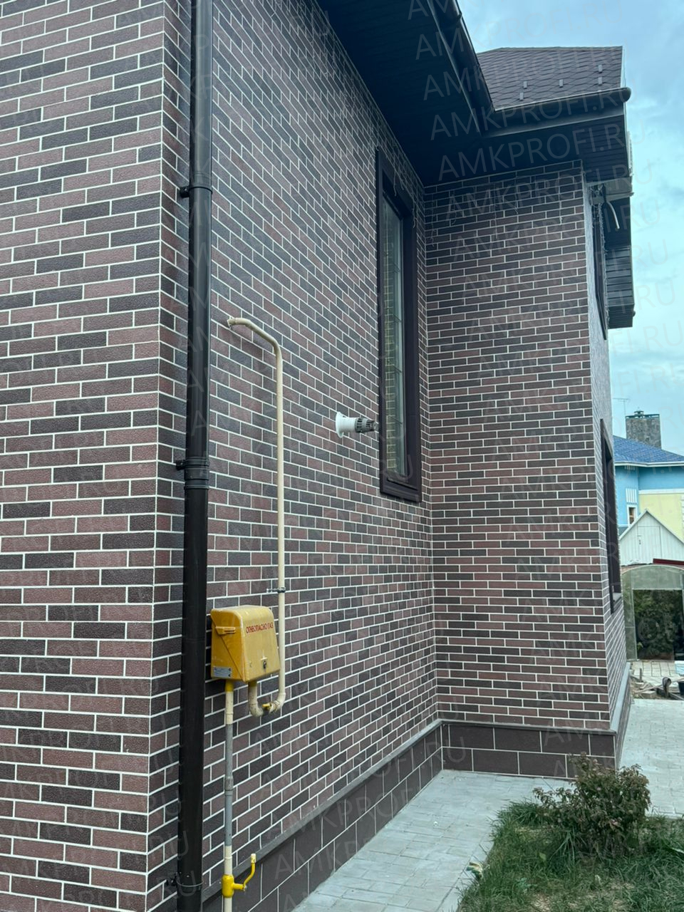
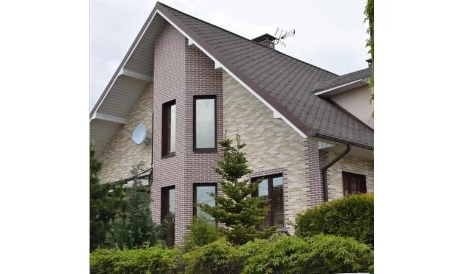
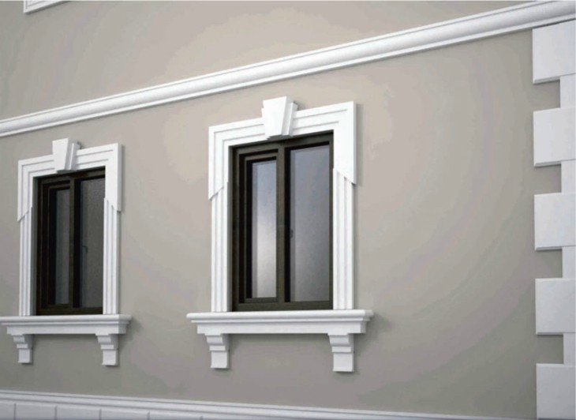
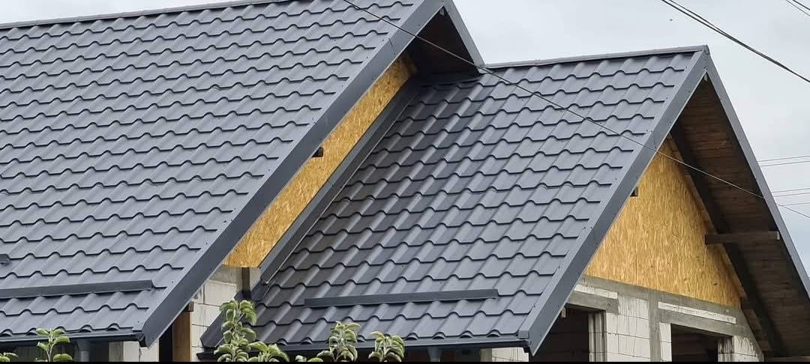

Tot Ce Trebuie să Știi Despre Panourile AMK în Moldova
📅 5 Iulie 2026 | ⏱️ 7 minute | 📍 Chișinău, Bălți, Cahul | ✍️ Valmex.md
Panourile AMK (Aluminiu-Metal-Kompozit) reprezintă una dintre cele mai moderne și eficiente soluții pentru fațadele caselor din Republica Moldova. Dacă îți dorești o fațadă care să combine estetica premium, izolația termică excelentă și rezistența la intemperii, panourile AMK sunt alegerea perfectă. În acest ghid complet, îți explicăm tot ce trebuie să știi despre această tehnologie.
Ce Sunt Panourile AMK?
Panourile AMK sunt panouri compozite formate din trei straturi: două foi subțiri de aluminiu (0,3–0,5 mm fiecare) și un nucleu termoizolant din polietilenă ignifugă sau minerală. Această structură oferă un raport excepțional între greutate și rezistență, fiind de 5 ori mai ușoare decât o placă de aluminiu solidă, dar la fel de rigide.
În Republica Moldova, panourile AMK sunt din ce în ce mai căutate pentru casele noi și renovările fațadelor existente, mai ales în Chișinău, Bălți, Cahul și alte orașe mari, unde proprietarii caută soluții moderne și durabile.



Exemple de fațade cu panouri AMK realizate de echipa Valmex.md în Republica Moldova
Avantajele Panourilor AMK pentru Casele din Moldova
Panourile AMK aduc numeroase beneficii specifice condițiilor din Republica Moldova:
1. Izolație Termică Superioară
Cu un coeficient de transfer termic de până la 0,15 W/m²K, panourile AMK reduc semnificativ pierderile de căldură. În Moldova, unde iernile pot atinge -25°C în nordul țării (Bălți, Edineț, Soroca), o fațadă cu panouri AMK poate reduce factura de încălzire cu până la 40%.
2. Rezistență la Intemperii
Panourile AMK rezistă la vânt de până la 200 km/h, grindină de 25 mm și variații de temperatură de la -50°C la +80°C. Aceste caracteristici le fac ideale pentru clima continentală a Moldovei, cu veri călduroase și ierni geroase.
3. Varietate Estetică Enormă
Disponibile în peste 200 de culori și texturi — de la imitații de lemn, piatră și beton până la culori metalice și lucioase. Poți alege exact stilul care se potrivește arhitecturii casei tale, fie că e vorba de o vilă modernă în Chișinău sau o casă tradițională în sat.
4. Montaj Rapid și Curat
Fațada unei case medii (120–150 m²) poate fi terminată în 7–14 zile. Sistemul de fixare mecanic ascuns nu lasă urme de șuruburi vizibile, oferind un aspect impecabil. Nu necesită cofraje, tencuieli sau timpi de uscare.
5. Durabilitate Excepțională
Durata de viață a panourilor AMK este de 30–50 de ani, cu garanție de la producător de 10–20 ani. Nu se decolorează, nu se deformează și nu necesită revopsire periodică, spre deosebire de tencuiala tradițională.
6. Rezistență la Foc
Panourile AMK cu nucleu mineral sunt clasificate clasa A2 (nedegenerabile) conform normelor europene, oferind siguranță maximă împotriva incendiilor — un aspect crucial pentru casele cu încălzire pe lemne, foarte răspândite în Moldova.
💡 Sfatul Specialistului Valmex
Pentru casele din zonele cu umiditate ridicată ale Moldovei (Codri, zonele de luncă ale Nistrului și Prutului), recomandăm panourile AMK cu nucleu mineral și sistem de ventilație activă. Această combinație previne acumularea condensului și mucegaiului.
Tipuri de Panouri AMK Disponibile în Moldova
Pe piața din Republica Moldova găsești mai multe categorii de panouri AMK:
| Tip Panou AMK | Grosime | Preț (lei/m²) | Recomandare |
|---|---|---|---|
| AMK Standard (PE) | 3–4 mm | 450–550 | Anexe, garaje, spații comerciale |
| AMK Premium (PVDF) | 4–5 mm | 550–750 | Case rezidențiale, vile |
| AMK Ignifug (FR) | 4–6 mm | 650–850 | Case cu încălzire pe lemne, clădiri publice |
| AMK Lux (Nano) | 5–6 mm | 800–1.200 | Proiecte de lux, clădiri office |
Cum Se Montează Panourile AMK — Procesul Valmex.md
Montajul panourilor AMK necesită experiență și precizie. Echipa Valmex.md execută fațade cu panouri AMK în toată Republica Moldova, respectând următorii pași:
- Evaluarea fațadei — inspectăm starea peretelui existent, identificăm probleme structurale sau de umiditate
- Pregătirea suprafeței — curățare, tratament antiseptic, nivelare dacă este necesar
- Montajul sistemului de substructură — profile din aluminiu sau oțel zincat, fixate mecanic la distanță de 30–40 cm
- Izolația termică — vată minerală sau polistiren extrudat de 50–150 mm, în funcție de cerințe
- Folia de difuzie — permite evacuarea vaporilor, blochează pătrunderea apei
- Montajul panourilor AMK — fixare mecanică ascunsă, aliniere perfectă, rosturi de dilatație
- Finisaje și detalii — colțare, profile de început și sfârșit, etanșări siliconice
⚠️ Atenție!
Montajul neprofesionist al panourilor AMK poate duce la probleme grave: condens, deformări termice, infiltrații de apă. Alege mereu o echipă cu portofoliu verificabil. Valmex.md oferă garanție 10 ani pentru toate lucrările de fațadă cu panouri AMK în Moldova.
Cât Costă o Fațadă cu Panouri AMK în Moldova în 2026?
Calcul estimativ pentru o casă cu 120 m² de fațadă în Chișinău:
- Panouri AMK Premium (4 mm, PVDF) — 120 m² × 650 lei = 78.000 lei
- Substructură și accesorii — 12.000 lei
- Izolație termică (vată minerală 100 mm) — 120 m² × 85 lei = 10.200 lei
- Montaj profesional — 120 m² × 120 lei = 14.400 lei
- Transport în Chișinău — gratuit
Total estimativ: ~114.600 lei (inclusiv TVA)
Pentru o ofertă personalizată, folosește Calculatorul de Panouri AMK Valmex sau contactează-ne direct.
Panouri AMK vs. Alte Soluții de Fațadă în Moldova
Cum se compară panourile AMK cu alte opțiuni populare pe piața din Moldova?
- vs. Tencuială decorativă — AMK oferă izolație mult superioară, durabilitate dublă și zero necesar de întreținere. Tencuiala este însă mai accesibilă ca preț inițial.
- vs. Termosistem (polistiren + tencuială) — AMK are aspect premium, montaj mai rapid și nu se crapă în timp. Termosistemul este mai ieftin, dar necesită renovare la fiecare 10–15 ani.
- vs. Cărămidă aparentă — AMK este de 3 ori mai ușoară, nu necesită fundație suplimentară și oferă izolație integrată. Cărămida are un aspect rustic inegalabil.
- vs. Lemn — AMK nu necesită tratament periodic, nu putrezește și nu este afectat de insecte. Lemnul oferă căldură naturală, dar necesită întreținere constantă în Moldova.
Concluzie
Panourile AMK reprezintă investiția inteligentă pentru fațada casei tale din Republica Moldova. Combinând estetica modernă, izolația termică superioară și durabilitatea de zeci de ani, aceste panouri transformă orice casă într-un exemplu de arhitectură contemporană. Echipa Valmex.md are experiență în montajul panourilor AMK în toată Moldova — de la proiecte rezidențiale în Chișinău și Bălți până la pensiuni și clădiri comerciale în Cahul și nordul țării. Contactează-ne pentru o consultație gratuită și o ofertă personalizată!
🏠 Vrei o Fațadă cu Panouri AMK în Moldova?
Echipa Valmex.md oferă consultație gratuită și ofertă personalizată pentru montajul panourilor AMK în toată Republica Moldova. Sună acum sau solicită ofertă online!
📞 Sună Acum: +373 78 026 212Sau trimite cerere online — răspundem în 30 de minute
Articole similare

Fațade Decorative pentru Case din Moldova
Tencuială decorativă siliconată, panouri AMK și alte soluții moderne pentru fațade în Chișinău și Bălți.

Cum să Alegi Țigla Metalică Potrivită
Ghid complet pentru alegerea țiglei metalice în funcție de buget, stil arhitectural și condiții climatice din Moldova.

Cât Durează un Acoperiș Metalic?
Durata de viață a acoperișului metalic și factorii care o influențează în condițiile din Republica Moldova.